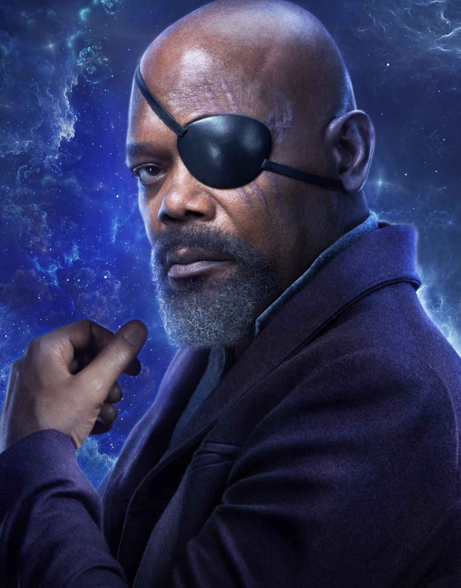
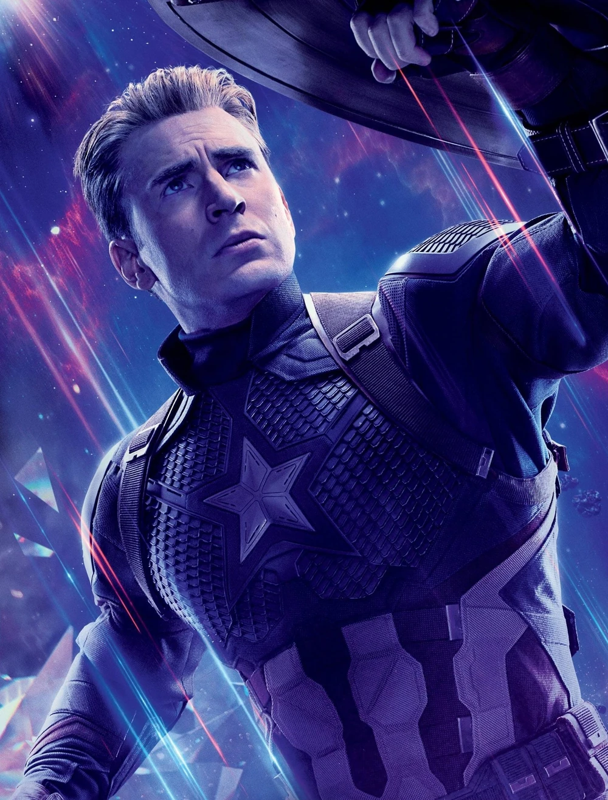

|  |
Director Nicholas Joseph "Nick" Fury is an American spy, the former Director of S.H.I.E.L.D., and the founder of the Avengers.
Fury began his career of serving his nation within the United States Army, rising to the rank of Colonel before becoming a CIA operative during the Cold War.
Fury then joined S.H.I.E.L.D., where he recruited and trained Phil Coulson and John Garrett.
In 1995, Fury met Vers and the Skrull General Talos and helped Vers uncover her human heritage as Carol Danvers.
The trio fought the Starforce, led by Yon-Rogg, who were targeting Skrull refugees.
Fury took a liking to Goose, although she scratched and permanently blinded Fury's left eye.
While Danvers then left Earth in order to find a new home for the Skrulls, Fury would summon a team of Skrulls to Earth to secretly aid him with his spy career in exchange for helping them find a home.
|
 |
Anthony Edward "Tony" Stark was a billionaire industrialist, a founding member of the Avengers, and the former CEO of Stark Industries.
A brash but brilliant inventor, Stark was self-described as a genius, billionaire, playboy, and philanthropist.
With his great wealth and exceptional technical knowledge, Stark was one of the world's most powerful men following the deaths of his parents and enjoyed the playboy lifestyle for many years until he was kidnapped by the Ten Rings in Afghanistan, while demonstrating a fleet of Jericho missiles.
With his life on the line, Stark created an armored suit which he used to escape his captors.
Upon returning home, he utilized several more armors to use against terrorists, as well as Obadiah Stane who turned against Stark.
Following his fight against Stane, Stark publicly revealed himself as Iron Man.
|
|  |
Steven Grant "Steve" Rogers is a World War II veteran, a founding member of the Avengers, and Earth's first known superhero.
Rogers grew up suffering from numerous health problems, and upon the United States' entry into World War II, he was rejected from serving in the United States Army despite several attempts to enlist.
Rogers ultimately volunteered for Project Rebirth, where he was the only recipient of the Super Soldier Serum developed by Abraham Erskine under the Strategic Scientific Reserve.
The serum greatly enhanced Rogers' physical abilities to superhuman levels.
After Erskine's assassination and being doubted by SSR head director Chester Phillips, Rogers was relegated to performing in war bond campaigns, where he posed as a patriotic mascot under the moniker of Captain America.
|